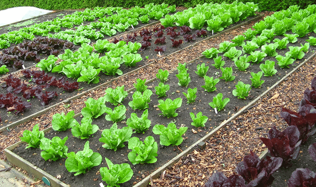

Home vegetable gardening tricks are often passed down from one generation to another. The importance of harvesting all you can in return for a little hard work will never go out of style. Follow these vegetable growing tips and enjoy a bountiful harvest all season long!
Plant High-Yield Vegetables
Make the most of your time and space by growing vegetables that produce a high yield. At the top of the list are tomatoes, onions and lettuce. They require the least amount of space and time, but give the most valuable yields in return. Melons, winter squash and pumpkins are fun to grow, but take much more space and produce very little.

Use Quality Soil

Plants draw their nutrients from the soil, so it only makes sense that the better the soil, the better your vegetables will taste come harvest time. One of the best ways to improve soil is by adding organic matter. You can mulch with all kinds of materials – straw, for example, is excellent for vegetable gardens. Just make sure to apply it on a still day and water it well to weigh it down. Gilmour’s Elevated Sprinkler is perfect for this because it rains down on the straw without disturbing it. Keep the straw moist until it mends into a cohesive mass in your garden.
Plant the Right Crops for Your Region
Sure, we know not to plant tomatoes, peppers and corn before the soil warms up – but many novice gardeners overlook the importance of planting properly for their specific garden zone. Check the days to maturity on each seed packet or plant label to see if you have enough time in the growing season for the plant to reach full maturity.

Proper Watering for Vegetable Gardens
Vegetables benefit from a consistent watering schedule. Too little water and you may not get vegetables at all. Too much, and you can drown the roots and spoil the fruit. To ensure consistent watering, use a watering nozzle at ground level to deliver even moisture to the plants at their roots. To make the job effortless, hook your hose up to a programmable timer. Set it and focus on some of the more labor intensive vegetable gardening tips.
Adequate Sun Exposure
Very few vegetables grow in an area with less than half a day of sun. If your garden is getting more shade than sun, you may have to relocate it to another area of the yard. Before planting, keep an eye on various areas of your yard throughout the day to see which area gets the most sun. When you take the time to start a garden the right way, your veggies will reward you.
Improve the Taste of Your Vegetables
Store-bought vegetables often lack flavor simply because they’re grown in the wrong season. Vegetables generally fall within two categories: those that love cool weather and those that need warm weather. Planting spinach and kale in the summer may sound like a good idea, but the results often taste bitter, and tomatoes won’t turn red in time if you plant them too close to fall. Plant at the proper times to reap the best garden harvest.
Is Companion Planting a Good Fit for You?
Did you know that the right combination of certain plants can make your vegetables more productive? Companion planting can help deter pests, promote growth and even improve flavor. Try it out for yourself! This year, plant rosemary with your beans or basil under your tomatoes.
Time to Bring Some Veggies Inside?
If you grow a wide variety of crops, your vegetables (even different varieties of the same vegetable) will ripen at different times over the course of a season. Be sure to harvest each vegetable at peak ripeness – it’s easy to overlook a plant one day only to find the handful of tomatoes you’d eagerly been awaiting had suddenly turned mealy. Check plants daily and never miss out on perfect timing.
Use a Vertical Trellis or Fence to Save Space

The professionals’ vegetable garden planting tips encourage you to look up! Grow more in less space by going up instead of out. Garden trellises support plants, such as tomatoes, cucumber, beans and small melons. The right trellis can even double your garden yield by increasing sunlight, easing harvest and allowing for easier pest management.
Defend Against Garden Pests
Pests weaken plants and take nutrients away from vegetable production. But before grabbing for the pesticides at the first sign of a chewed leaf in your garden, think about some alternative solutions. A lot of the time, you can combat pest problems – and increase your yield – by using natural remedies. Floating row covers, handpicking and slug traps are all effective ways to naturally reduce the damage to your vegetable garden, without the harmful chemicals found in so many pesticides.

Winterize Your Garden
While it’s tempting to take the season off, believe it or not, winter offers a perfect time to improve your vegetable garden area. Take advantage of the occasional warmer-winter day to reduce weeds, improve organic matter and prep for spring. A little time spent now will get you growing as soon as possible and extend your harvest.